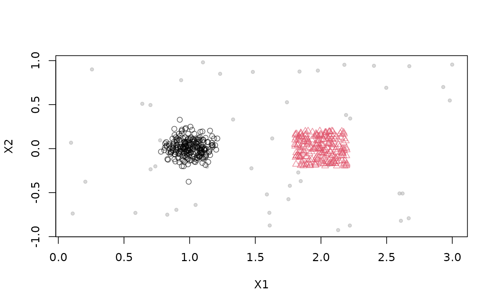
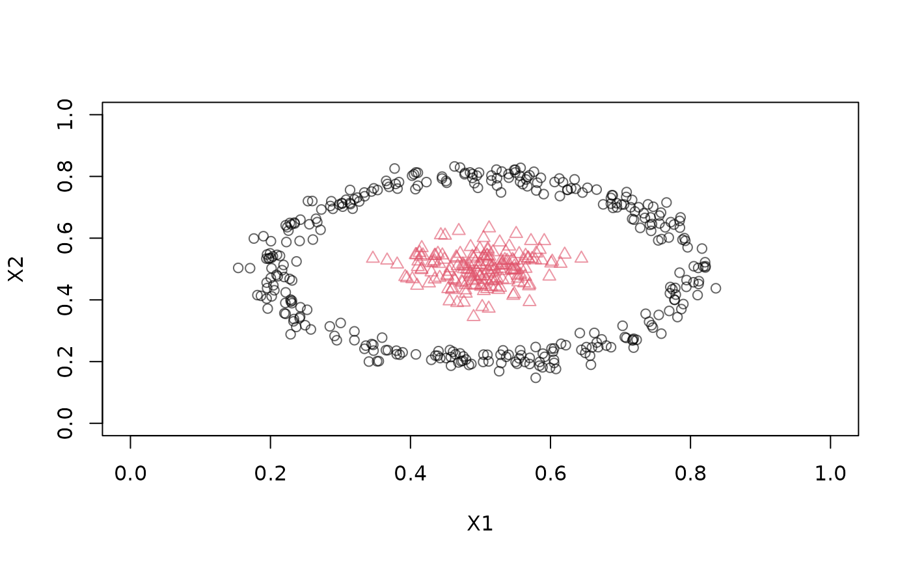

Components for building evolving clusters for the DSD_MG data stream
generator. Each Moving Generator Cluster (MGC) describes a single cluster:
where it is (its center), how large it is and what shape it has (the shape
parameters), and how many points it produces (its density). Moving
components also describe how these properties change over time.
Usage
MGC(...)
MGC_Function(density, center, parameter, shape = Shape_Gaussian)
MGC_Linear(dimension = 2, keyframelist = NULL, shape = Shape_Gaussian)
keyframe(time, density, center, parameter, reset = FALSE)
add_keyframe(x, time, density, center, parameter, reset = FALSE)
get_keyframes(x)
remove_keyframe(x, time)
MGC_Noise(density, range)
MGC_Random(density, center, parameter, randomness = 1, shape = Shape_Gaussian)
Shape_Gaussian(center, parameter)
Shape_Block(center, parameter)
MGC_Static(density = 1, center, parameter, shape = Shape_Gaussian)Arguments
- ...
Further arguments.
- density
The relative density of the cluster, i.e., how many points it produces compared to the other components (see Details). For
MGC_Function,densityis a function of time returning the density. Forkeyframe()andadd_keyframe()it is the density at the keyframe.- center
The center of the cluster as a numeric vector with one value per dimension. For
MGC_Function,centeris a function of time that returns such a vector. ForMGC_Random, this is the starting location of the cluster before it begins to move. Forkeyframe()andadd_keyframe()it is the center at the keyframe.- parameter
Parameters for the shape. For the default shape
Shape_Gaussianthe parameter is the standard deviation, one per dimension. ForShape_Block, it is the side length. If a single value is specified then it is recycled for all dimensions. ForMGC_Function,parameteris a function of time returning the parameter. Forkeyframe()andadd_keyframe()it is the parameter at the keyframe.- shape
A function that creates the shape of the cluster. It is called with the arguments
centerandparameterand returns a single point. Available functions areShape_Gaussian(the parameters are standard deviations) andShape_Block(the parameters are the side lengths of the uniform block). See Details for how to define a new shape.- dimension
Dimensionality of the data stream.
- keyframelist
a list of keyframes created with
keyframe()to initialize theMGC_Linearobject with.- time
The time stamp the keyframe is located at or the time stamp of the keyframe that should be removed. Adding a keyframe at an existing time replaces the existing keyframe with a warning.
- reset
Should the trajectory restart at the first keyframe after this keyframe is reached? Only the first keyframe with
reset = TRUEis used.- x
An object of class
MGC_Linear.- range
The area in which the noise should appear as a matrix with one row per dimension containing the minimum and maximum, e.g.,
rbind(c(0, 1), c(-1, 1))for two dimensions.- randomness
The maximum amount the cluster center will move in each dimension during one time step (a uniform step in
[-randomness, randomness]).
Value
MGC_Static(), MGC_Noise(), MGC_Linear(), MGC_Function() and
MGC_Random() return an MGC object that can be added to a DSD_MG
stream. keyframe() returns a keyframe (a list), get_keyframes() returns
a data.frame with the keyframes of an MGC_Linear object, and add_keyframe()
and remove_keyframe() modify the MGC_Linear object (which is a mutable
object, so a stream that contains it is also affected).
Shape_Gaussian() and Shape_Block() return a single point as a numeric
vector.
Details
A DSD_MG stream is assembled from a list of MGCs. Mixing components
with different behavior creates complex evolving streams from simple
building blocks. All components of a stream must have the stream's
dimensionality.
Static (i.e., not moving) components are:
MGC_Staticis a stationary cluster with fixed density, center and shape parameters.MGC_Noiseproduces uniform random noise in the area given byrange. It is often used to create individual random outliers.
Moving (evolving) components are:
MGC_Linearcreates an evolving cluster whose density, center and shape parameters are linearly interpolated between keyframes. Before its first keyframe the component produces no points. After its last keyframe it keeps the attributes of that keyframe, unless a keyframe withreset = TRUEmakes the trajectory repeat.keyframe()creates a keyframe (for thekeyframelistargument),add_keyframe()andremove_keyframe()modify the keyframes of an existing component, andget_keyframes()returns them as a data.frame.MGC_Functionallows users to specifydensity,center, andparameteras functions of time. This allows arbitrary trajectories.MGC_Randomcreates a cluster that follows a random walk.
Time and density. Generation in DSD_MG is driven by a generator time
that advances as points are drawn. To produce a point, DSD_MG chooses a
component with a probability proportional to the current densities of all
components and then draws a point from the component's shape. The
density is therefore a relative value that determines the chance of choosing
a component and, through the total density, how fast time advances: with a
total density of 100, approximately 100 points advance the generator by one
time unit. Time-dependent arguments (functions and keyframes) refer to this
generator time, which starts at 1.
Cluster shapes. The shape of a cluster is given by the shape argument.
Available shapes are:
Shape_Gaussian(the default) draws from a multivariate normal distribution with independent dimensions.parameteris the standard deviation, one per dimension.Shape_Blockdraws uniformly from a block (hyper-rectangle) centered atcenter.parametergives the side length for each dimension.
If a single value is given as parameter, it is recycled for all dimensions.
New shapes can be defined as a function with arguments center and
parameter that returns a single point (a numeric vector with the
dimensionality of the stream). Here is the definition of the Gaussian
shape as an example:
See the examples below for a custom ring shape in two dimensions.
Examples
MGC()
#> MGC is an abstract class and cannot be instantiated!
#>
#> Available subclasses in ‘package:stream’ are:
#> MGC_Function,
#> MGC_Linear,
#> MGC_Noise,
#> MGC_Random,
#> MGC_Static
#>
#> To get more information in R Studio, type ‘MGC_’ and hit the Tab key.
### Two static clusters (Gaussian with sd of .1 and a Block with width .4)
### with added noise
stream <- DSD_MG(dimension = 2,
MGC_Static(density = .45, center = c(1, 0), parameter= .1, shape = Shape_Gaussian),
MGC_Static(density = .45, center = c(2, 0), parameter = .4, shape = Shape_Block),
MGC_Noise( density = .1, range = rbind(c(0, 3), c(-1,1)))
)
stream
#> Moving Data GeneratorClass: DSD_MG, DSD_R, DSD
#> With 3 clusters in 2 dimensions. Time is 1
plot(stream)

### Example of several MGC_Randoms which define clusters that randomly move.
stream <- DSD_MG(dimension = 2,
MGC_Random(density = 100, center=c(1, 0), parameter = .1, randomness = .2),
MGC_Random(density = 100, center=c(2, 0), parameter = .4,
shape = Shape_Block, randomness = .2)
)
if (FALSE) { # \dontrun{
animate_data(stream, 2500,
xlim = c(0,3), ylim = c(-1,1),
horizon = 100)
} # }
### Example of several MGC_Functions
### a block-shaped cluster moving from bottom-left to top-right increasing size
c1 <- MGC_Function(
density = function(t){ 100 },
parameter = function(t){ 1 * t },
center = function(t) c(t, t),
shape = Shape_Block
)
### a cluster moving in a circle (default shape is Gaussian)
c2 <- MGC_Function(
density = function(t){ 25 },
parameter = function(t){ 5 },
center= function(t) c(sin(t / 10) * 50 + 50, cos(t / 10) * 50 + 50)
)
stream <- DSD_MG(dimension = 2, c1, c2)
## adding noise after the stream was created
add_cluster(stream, MGC_Noise(density = 10, range = rbind(c(-20, 120), c(-20, 120))))
stream
#> Moving Data GeneratorClass: DSD_MG, DSD_R, DSD
#> With 3 clusters in 2 dimensions. Time is 1
if (FALSE) { # \dontrun{
animate_data(stream, 10000,
xlim = c(-20, 120), ylim = c(-20, 120),
horizon = 100)
} # }
### Example of several MGC_Linear: A single cluster splits at time 50 into two.
### Note that c2 starts at time = 50!
stream <- DSD_MG(dimension = 2)
c1 <- MGC_Linear(dimension = 2)
add_keyframe(c1, time = 1, density = 50, parameter = 5, center = c(0, 0))
add_keyframe(c1, time = 50, density = 50, parameter = 5, center = c(50, 50))
add_keyframe(c1, time = 100,density = 50, parameter = 5, center = c(50, 100))
add_cluster(stream, c1)
c2 <- MGC_Linear(dimension = 2, shape = Shape_Block)
add_keyframe(c2, time = 50, density = 25, parameter = c(10, 10), center = c(50, 50))
add_keyframe(c2, time = 100,density = 25, parameter = c(30, 30), center = c(100, 50))
add_cluster(stream, c2)
if (FALSE) { # \dontrun{
animate_data(stream, 5000,
xlim = c(0, 100), ylim = c(0, 100),
horizon = 100)
} # }
### define your own shape: a ring in two dimensions where `parameter` is the
### radius. Points are spread uniformly around the center with a little noise.
Shape_Ring <- function(center, parameter) {
angle <- runif(1, 0, 2 * pi)
center + rnorm(1, mean = parameter[1], sd = 0.02) * c(cos(angle), sin(angle))
}
stream <- DSD_MG(dimension = 2,
MGC_Static(density = 50, center = c(0.5, 0.5), parameter = 0.3,
shape = Shape_Ring),
MGC_Static(density = 25, center = c(0.5, 0.5), parameter = 0.05)
)
plot(stream, n = 500, xlim = c(0, 1), ylim = c(0, 1))

### two fixed and a moving cluster
stream <- DSD_MG(dimension = 2,
MGC_Static(density = 1, parameter = .1, center = c(0, 0)),
MGC_Static(density = 1, parameter = .1, center = c(1, 1)),
MGC_Linear(dimension = 2, list(
keyframe(time = 0, density = 1, parameter = .1, center = c(0, 0)),
keyframe(time = 1000, density = 1, parameter = .1, center = c(1, 1)),
keyframe(time = 2000, density = 1, parameter = .1, center = c(0, 0), reset = TRUE)
)))
noise <- MGC_Noise(density = .1, range = rbind(c(-.2, 1.2), c(-.2, 1.2)))
add_cluster(stream, noise)
if (FALSE) { # \dontrun{
animate_data(stream, n = 2000 * 3.1,
xlim = c(-.2, 1.2), ylim = c(-.2, 1.2),
horizon = 200)
} # }